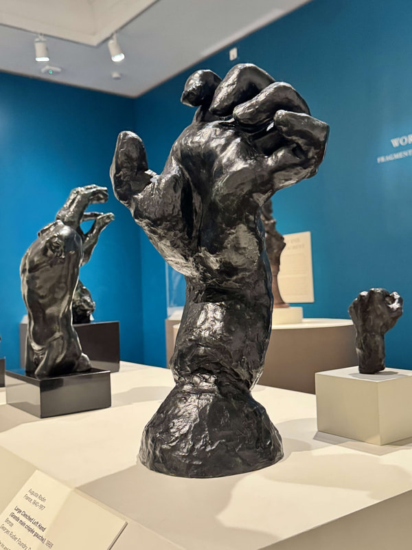
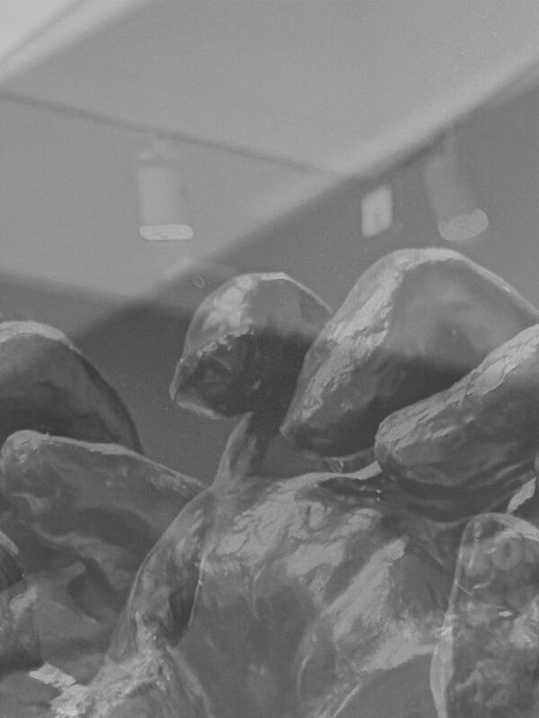

multimedia artist :]
Lefty


The title of this work is called Lefty. It is two images and a video of the piece “Large Clenched Left Hand”
by sculptor Auguste Rodin,
that has been glitched twice over, once in the initial image itself and again in the video. The glitched image
shows a distortion of the
original with a displacement of the upper part of the sculpture and the lower half of the table into opposite
ends of the composition and
made completely grayscale. The video shows a gray glitched blob with a lighter line through the center, with a
slight movement of pixels
all throughout.
I found this source media from my visit to the Cantor Arts Center at Stanford this weekend, where an entire
exhibit was showing sculpture
works done by Auguste Rodin. I’d previously learned about his work in an art history class, and found it
really compelling how he was able
to convey such a sense of motion in his sculptures. I hadn’t really thought about his work again since then
until now, but getting to see
one of his works in-person gave me the inspiration to go ahead with this piece. I decided to start out with
the Audible and Photoshop
method to layer the image with an initial glitch. I then turned it into a video by stabilizing with the
snipping tool recorder, exporting
it as an mp4 and then used the video glitch method to pull it all together.
My use of glitch is meant to be a mirror of Rodin's own work but done via the ethic of glitch art. I wanted to
emulate how a sculptor takes
a material and chips away at it to create a sculpture. I started with my own image of his work and chipped
away at it by converting it into
a waveform and then adding a fade out to “chisel” the data to get the preliminary image. I then converted it
into a video that I once again
“chiseled” via waveform with several audio effects to get a second layer of glitch. I opted to make it into a
video glitch as a way of leveraging
technology to give my sculpture visual motion akin to how the original piece conveys motion through the fine
sculpt work and pose.